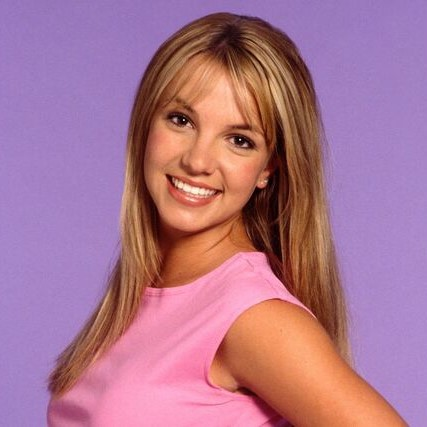
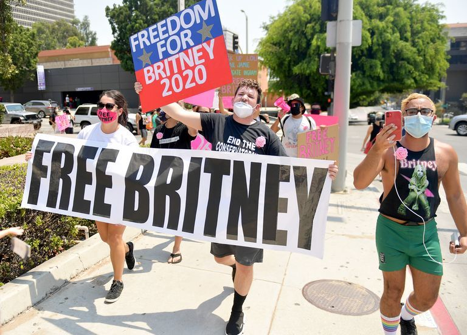

Britney Who?
Britney Jean Spears (born December 2, 1981) is an American singer, songwriter, and dancer. She is credited with influencing the revival of teen pop during the late 1990s and early 2000s, for which she is referred to as the "Princess of Pop".
Regarded as a pop icon, Spears has sold over 100 million records worldwide, including over 70 million solely in the United States, making her one of the world's best-selling music artists.
See more about BritneyThe movement
For nearly half of Britney Spears's decades-long career as a world-renowned pop star, the "Womanizer" singer hasn't held full control of her life.
Britney has been under a conservatorship helmed by her father, Jamie Spears, since the singer's infamous breakdown 12 years ago, which resulted in hospitalization and rehab. Though the stigma surrounding Spears's mental health battles has followed the singer since 2007, her career never faltered. Marking an official comeback with her 2008 album, Circus, Britney continued to release albums, tour, star in a years-long Las Vegas residency, and launch business ventures including her lucrative perfume and namesake lingerie lines.
According to CNN, during a September 29 court hearing and following a passionate address from Britney Spears's attorney, Mathew Rosengart, Jamie Spears was officially suspended as the conservator of his daughter's estate. Certified public accountant John Zabel has been named a temporary conservator following Jamie's suspension. Jodi Montgomery also remains the conservator of Britney's person.
Free Britney's references